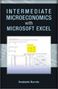
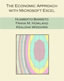
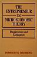

Books
Gateway to Business Analytics with Microsoft Excel, PALNI Open Press, 2025.
Intermediate Microeconomics with Microsoft Excel, 2nd ed., 2020.
 Intermediate Microeconomics with Microsoft Excel, Cambridge University Press, 2008.
 The Economic Approach with Microsoft Excel, with Frank M. Howland and Kealoha Widdows, 2007. Email me for more information.
Introductory Econometrics Using Monte Carlo Simulation with Microsoft Excel, with Frank M. Howland, Cambridge University Press, 2006; second printing, 2010.
 The Entrepreneur in Microeconomic Theory: Disappearance and Explanation, Routledge, 1989 (re-issued in Arabic, 1999).